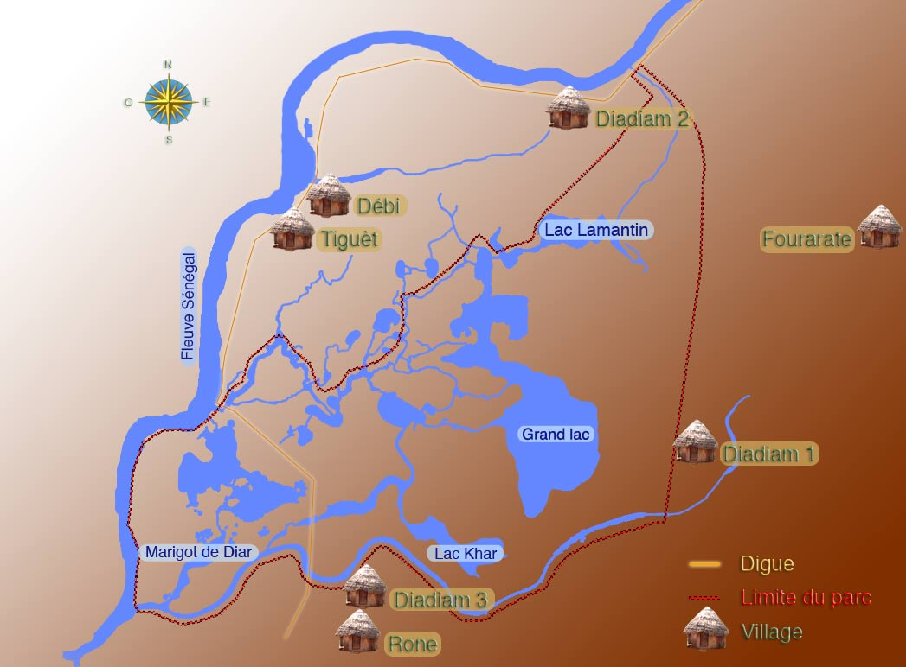
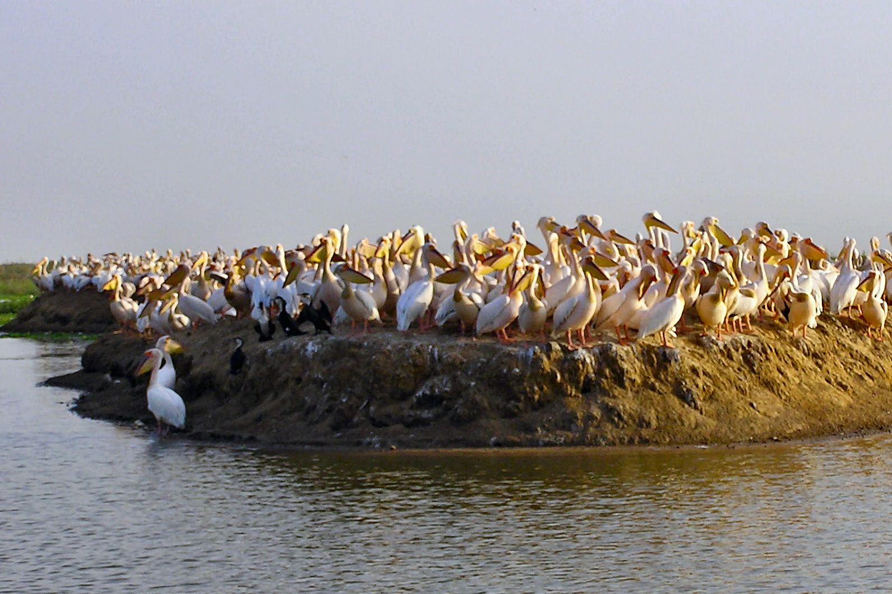
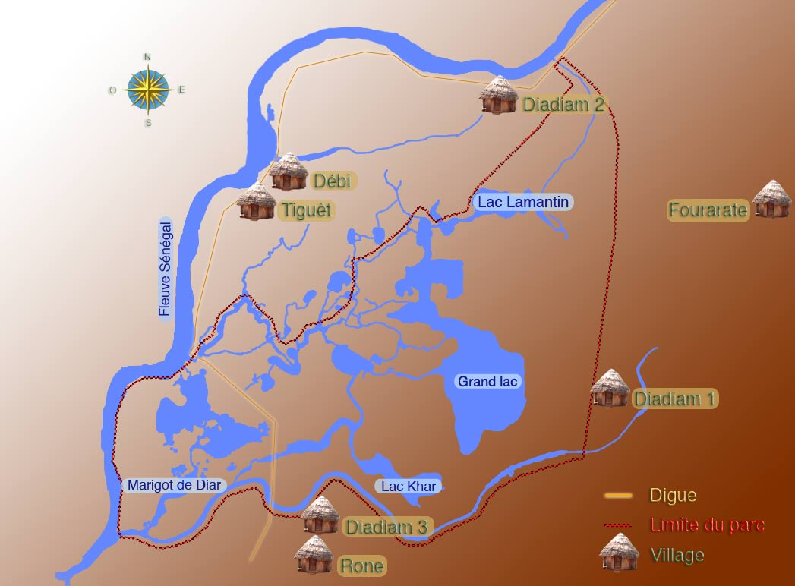
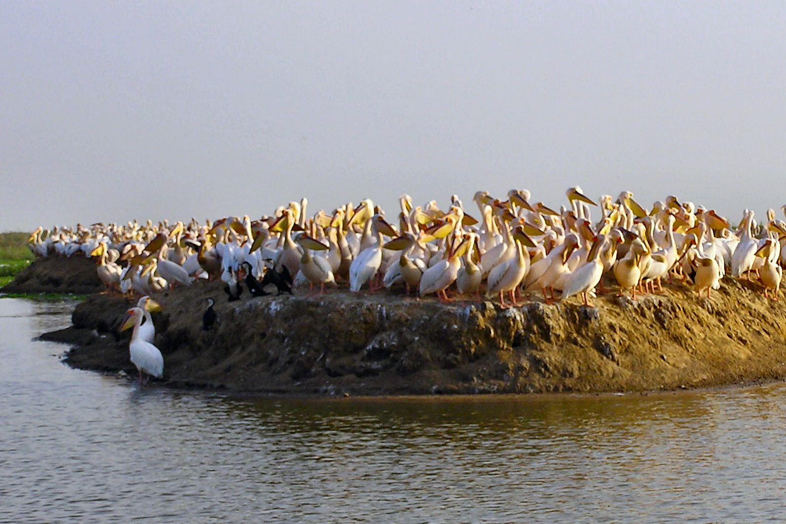

Parc national des oiseaux du Djoudj
Le parc national des oiseaux du Djoudj (PNOD) est situé à une soixantaine de kilomètres au nord de Saint-Louis du Sénégal. Paradis des oiseaux migrateurs,le parc est la troisième réserve ornithologique du monde Créé en 1971, agrandi en 1975, le parc a été classé en 1980 « zone humide d'importance internationale » par la Convention de Ramsar1, puis inscrit au Patrimoine mondial de l'Unesco en 19812.
 



Diversité des espèces
Le nombre d'oiseaux migrateurs est estimé à quelque trois millions, répartis en 350 espèces, en particulier le flamant rose, le pélican blanc (Pelecanus onocrotalus), quatre espèces d'aigrettes, l'oie de Gambie et le héron cendré. Les canards sont nombreux (souchets, pilets, sarcelles, etc.). On peut aussi observer de grands cormorans, des martins-pêcheurs ou des balbuzards.Varans et pythons se dissimulent parfois dans les herbes, ainsi que de petits crocodiles. En ce qui concerne les mammifères, il s'agit surtout de vaches, de singes rouges (patas) et de phacochères, mais hyènes, chats de Libye, servals et gazelles dorcas vivent aussi dans le parc.
Visite du parc
Le parc est ouvert de début novembre à fin avril. La visite s'effectue généralement en pirogue.
Venez visiter le Goréé